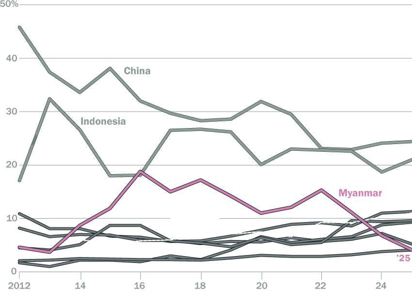
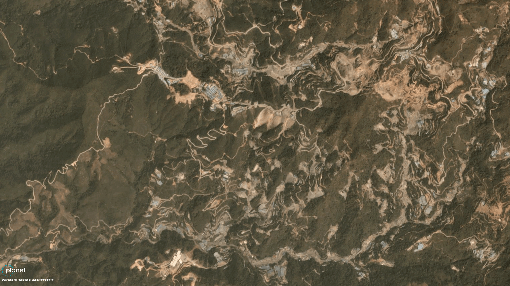
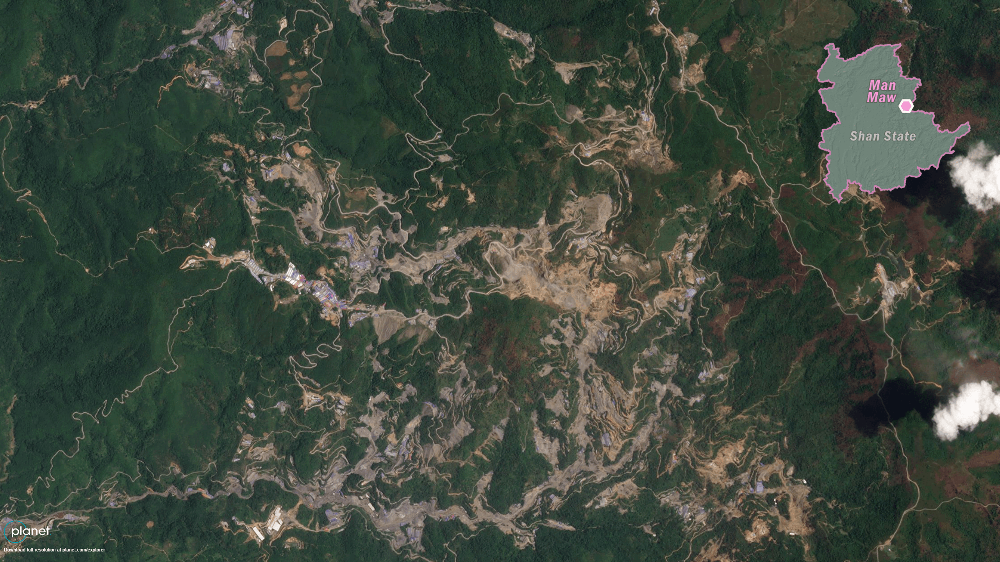
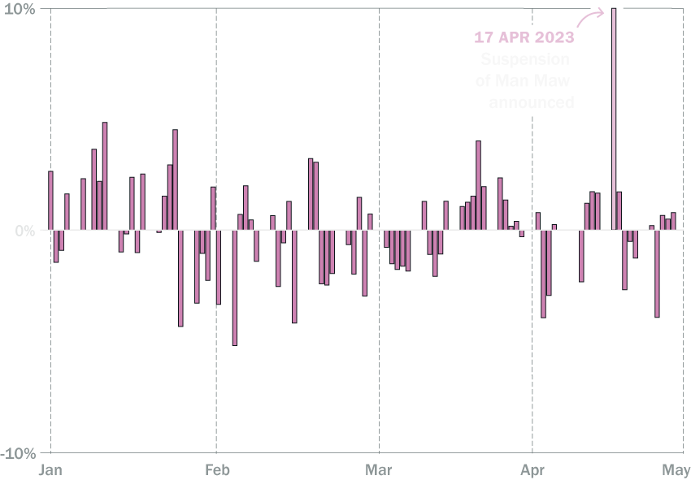
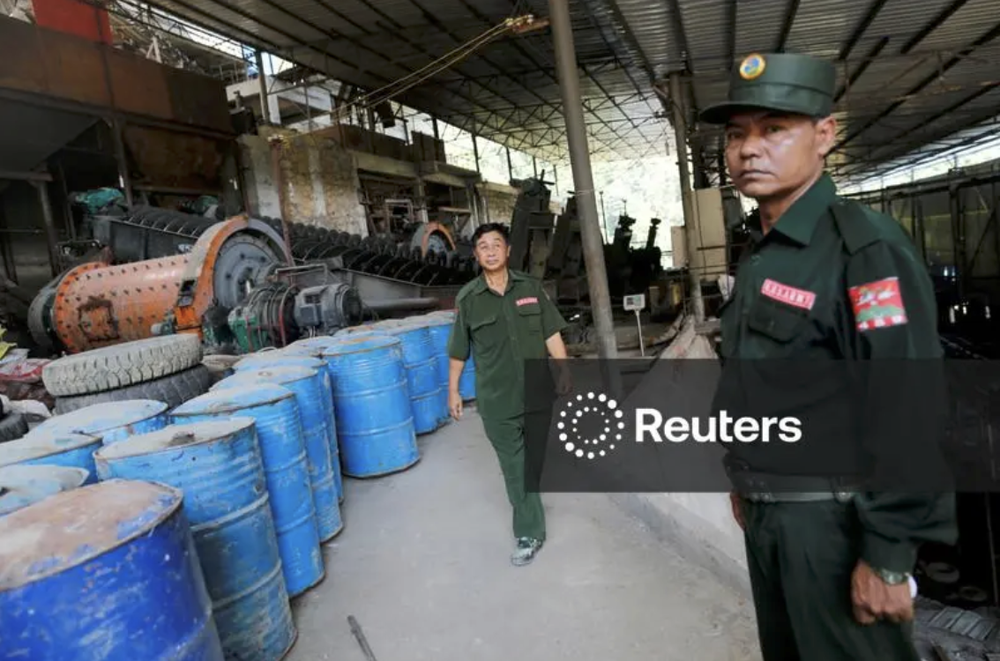
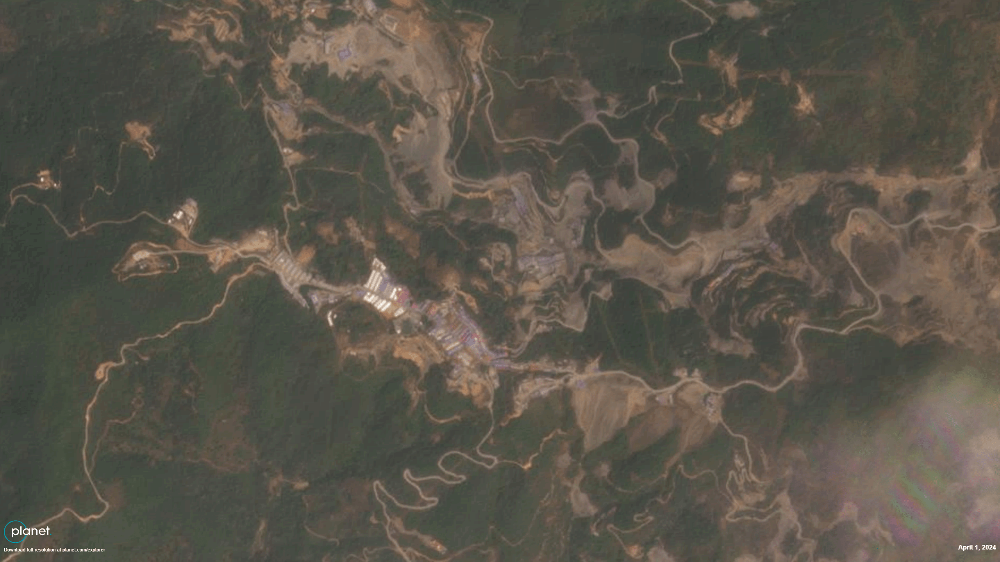
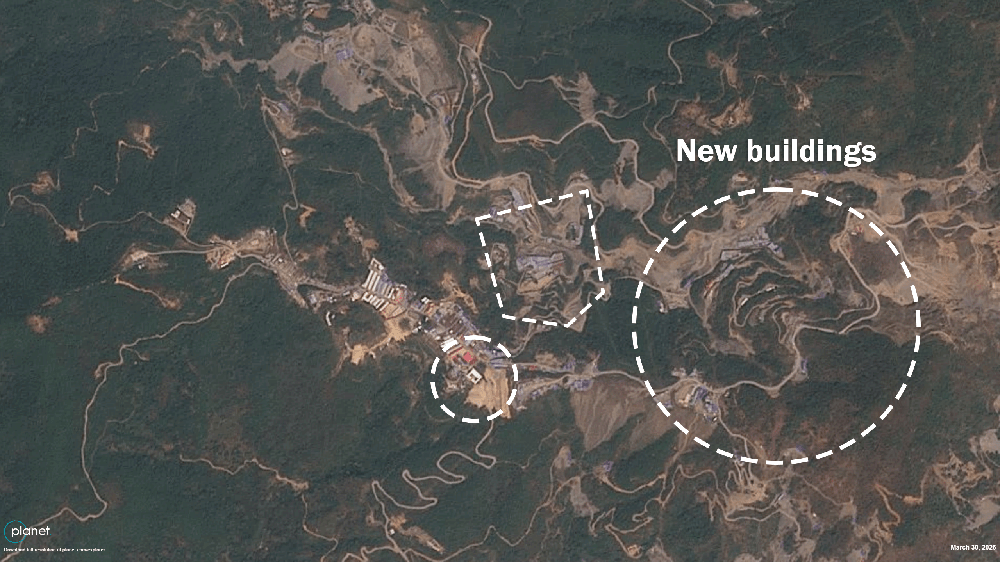
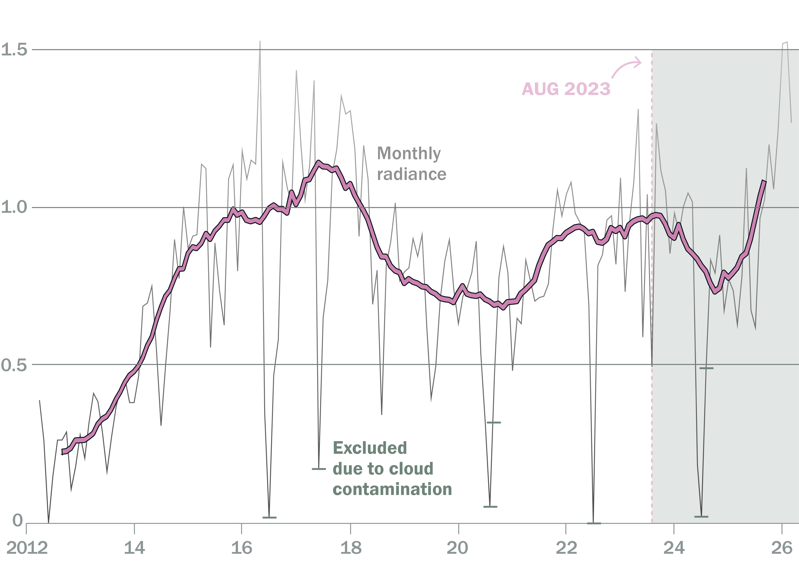

The Mine That Moves the Tin Market
When a single mine in eastern Myanmar suspended operations in 2023, global tin prices spiked and smelters in China scrambled for supply. The shock rippled through global supply chains, raising costs for electronics and semiconductor manufacturers across the world. Mining has since restarted, but output remains well below pre-suspension levels – and tin hit a record high above $53,000 a tonne in January 2026 as demand surged with the AI data centre boom.
The Man Maw mine is located in an enclave near the Chinese border controlled by the United Wa State Army (UWSA), a powerful non-state militia of more than 20,000 fighters with high-tech weaponry that has maintained a ceasefire with the Myanmar military since 1989. Mining is not its only source of income. It has been under U.S. sanctions since 2003 for narcotics trafficking, while a grand jury later indicted eight senior leaders in absentia on heroin and methamphetamine charges.
At its peak in the late 2010s and early 2020s, Myanmar became the world’s third-largest tin producer, behind only China and Indonesia, with the vast majority of the metal coming from Man Maw. In the peak years, Myanmar supplied over 90 per cent of China's tin ore imports, making it a critical upstream source for global solder, electronics and semiconductor supply chains.
Myanmar, an Essential Supplier of Tin
Share (%) in global tin production, by country

Production at the mine expanded rapidly through the 2010s. Satellite imagery shows roads, ore pads, tailings dumps and worker housing spreading across previously forested hillsides.

2019
2023The UWSA governs this territory as a de facto mini-state, largely insulated from Myanmar’s civil war even after the 2021 coup, as the decades-old ceasefire between the group and the military remains in place. That stability translated into predictable tin output and growing global dependence on supplies from the region. Tin concentrate exports from Myanmar to China were worth over $1 billion annually at their peak. For a single armed group, control over such enormous flows gives it not only substantial revenue, but also political leverage in both Myanmar and China.
Then, in April 2023, Wa authorities announced a suspension of mining at Man Maw, ostensibly for a resource audit. Production essentially halted in August that year. Benchmark tin prices on the London Metal Exchange immediately jumped by more than 10 per cent, an abrupt price shock for an industrial metal. Smelters warned of tightening concentrate supply. Analysts described the global market as “beholden” to the fortunes of a single Myanmar mine.
Global Tin Prices Hike on the London Metal Exchange
Daily per cent (%) of change in early 2023, based on price (USD per tonne)

The suspension also revealed an unforeseen vulnerability in the supply chain. As mentioned, the Wa justified the interruption in mining in Man Maw on the grounds of an audit, but Crisis Group interviews suggest that the real reason was internal Wa dynastic politics.
Man Maw was operated by seven companies, all controlled by senior Wa leaders. The closure coincided with a leadership transition within the UWSA, as a generational shift brought new individuals to the fore – including the sons of ageing leaders – and reopened disputes over informal power and revenue sharing arrangements. Tensions over revenue distribution from the mine – both among leaders and with the UWSA treasury – appear to have driven the prolonged halt in mining and the suspension of those companies’ permits.

The armed group opened applications for new mining licences in February 2025 and issued the first permits that July, on payment of sharply increased fees. Ore is moving again: China’s tin ore imports from Myanmar climbed through late 2025, and by the next June Myanmar was once more China’s largest single supplier, at 37 per cent of the total. But the recovery is partial. The deepest, highest-grade deposits have been flooded since 2023, and in February 2026 the Wa authorities issued rules sharing the cost of pumping them out among eleven mine portals. Satellite imagery shows large new buildings going up, and night-time illumination around the site has returned to higher levels after falling sharply following the suspension.

2024
2026Satellite Night-lights at Man Maw, Back to Normal?
12-month centred moving average excluding cloud contaminated months

The reasons for the slow restart remain unclear. Industry and media reports point to several possibilities, ranging from normal lead times for restarting underground mines, flooding in shafts, administrative delays and potential depletion of higher-grade ore bodies. Whatever the cause, a central concern in the tin market is the lack of reliable information.
Smelters drew down inventories and sought alternative sources of concentrate, but no supplier has fully replaced Man Maw’s output. Three years on, the market is tighter than ever, with tin being the best-performing non-ferrous metal of the past year, and analysts anticipate the first global supply deficit since 2021. Industry insiders still see a full resumption at Man Maw as important to the market’s long-term stability.
As tin demand surges with the AI data centre build-out, a critical input for advanced computing depends on opaque politics in a militia-run enclave beyond state control.
Mines typically open and close in response to global market signals. In this case, the market is reacting to the decisions of a militia. As tin demand surges with the AI data centre buildout, a critical input for advanced computing depends on opaque politics in a militia-run enclave beyond state control at the Myanmar-China border.